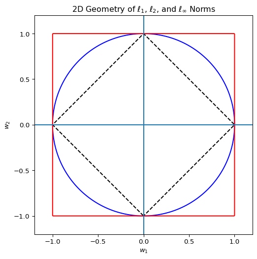

Shake it to the Max? Using the \(\ell_\infty\) norm for Synthetic Control Methods
Machine Learning
Econometrics
Author
Jared Greathouse
Published
December 25, 2025
Regularization in synthetic control methods has become an important econometric topic. Let \(\mathbf{y}_1 \in \mathbb{R}^{T_0}\) denote the pre-treatment outcomes for the treated unit and let \(\mathbf{Y}_0 \in \mathbb{R}^{T_0 \times |\mathcal{N}_0|}\) denote the corresponding donor matrix. In the most general terms, an SCM is a form of convex optimization where we use a set of donor units that were not exposed to a treatment to predict how the outcomes for a single (or set of) target unit(s) would have evolved without the treatment. In full generality, a synthetic control estimator solves the following family of programs:
Here \(\mathcal{L}(\cdot)\) denotes a data-dependent loss function governing pre-treatment fit, \(\mathcal{P}(\cdot)\) denotes a regularization or geometry-inducing penalty on the weights, and \(\mathcal{C}\) denotes a convex admissible set for the donor weights. The operator \(\mathcal{B}(\cdot)\) encodes balance or moment conditions, and \(\boldsymbol{\tau}\) controls the degree of relaxation. Either \(\mathcal{L}\) or \(\mathcal{B}\) may be identically zero, but not both. The classical synthetic control estimator of Abadie, Diamond, and Hainmueller is obtained by setting
where \(\mathbb{R}_+\) denotes the nonnegative reals. In this case, balance is enforced entirely through the objective function.
Regularized Synthetic Control
Analysts have developed formulations of synthetic control that simultaneously account for level differences and control the geometry of the donor weights. To allow for level differences, we augment the donor matrix with an intercept term:
where \(b_0 \in \mathbb{R}\) captures an additive baseline shift. Regularization of the coefficients is also an important issue. Note that all penalties are applied to \(\mathbf{w}\), while \(b_0\) is left unpenalized. For a graphical example, see the plot:
import numpy as npimport matplotlib.pyplot as plt# Grid for contour plotsx = np.linspace(-1.2, 1.2, 400)y = np.linspace(-1.2, 1.2, 400)X, Y = np.meshgrid(x, y)# NormsL1 = np.abs(X) + np.abs(Y)L2 = np.sqrt(X**2+ Y**2)Linf = np.maximum(np.abs(X), np.abs(Y))plt.figure(figsize=(6, 6))# Plot unit ballsplt.contour(X, Y, L1, levels=[1], colors="k", linestyles="dashed")plt.contour(X, Y, L2, levels=[1], colors="blue")plt.contour(X, Y, Linf, levels=[1], colors="red")# Axes and aestheticsplt.axhline(0)plt.axvline(0)plt.gca().set_aspect("equal", adjustable="box")plt.xlim(-1.2, 1.2)plt.ylim(-1.2, 1.2)plt.title("2D Geometry of $\\ell_1$, $\\ell_2$, and $\\ell_\\infty$ Norms")plt.xlabel("$w_1$")plt.ylabel("$w_2$")plt.show()

A common choice is the elastic net penalty, which encompasses a wide class of regularized SC estimators. These fit into the general framework by setting the balance operator \(\mathcal{B} \equiv 0\) (enforcing fit entirely through the objective, as in classical SCM), using a squared-error loss \(\mathcal{L}\) for pre-treatment fit, introducing a non-zero penalty \(\mathcal{P}\) to control weight geometry, and often relaxing the admissible set \(\mathcal{C}\) to allow greater flexibility (e.g., negative weights and no sum-to-one constraint, though variants may retain non-negativity for interpretability).
To allow for level differences, we augment the donor matrix with an intercept term:
with \(\mathcal{C} = \left\{ \mathbf{w} \in \mathbb{R}^{|\mathcal{N}_0|}, b_0 \in \mathbb{R} \right\}\) (relaxing non-negativity and sum-to-one). The \(\ell_1\) term encourages sparsity (SC supported on few donors), while the \(\ell_2^2\) term stabilizes against collinearity. Intermediate \(\alpha \in (0,1)\) yields the elastic net; special cases are \(\alpha = 1\) (pure LASSO) and \(\alpha = 0\) (pure Ridge).
Alternatively, as studied by Wang, Xing, and Ye (2025), one may replace the \(\ell_2\) term with the \(\ell_\infty\) norm:
again with \(\mathcal{C} = \left\{ \mathbf{w} \in \mathbb{R}^{|\mathcal{N}_0|}, b_0 \in \mathbb{R} \right\}\). The \(\ell_\infty\) component caps the maximum absolute weight, producing a “balanced sparsity” effect: a small number of donors may be selected, but none dominates. When using the \(\ell_\infty\) variant of the elastic net, \(\alpha = 0\) corresponds to the pure max-norm penalty. For a graphical example, see the plot below.
Geometrically, the \(\ell_1\)–\(\ell_\infty\) penalty replaces the circular ridge ball with a hyper-rectangular region, reflecting the analyst’s preference for bounding donor influence rather than merely smoothing it. These special cases highlight how the elastic net family interpolates continuously between sparsity and smoothness (or maximum weight control). Within the general framework, the optimization problem becomes:
where \(q = 2\) recovers the standard elastic net (with \(\lVert \mathbf{w} \rVert_2^2\)) and \(q = \infty\) recovers the max-norm variant. Conceptually, the \(\ell_2\) term spreads weights smoothly, stabilizing against collinearity, while the \(\ell_\infty\) term limits any single donor’s dominance. This is analogous to a portfolio with position limits: no single donor can dominate the synthetic control, while overall weight distribution can be controlled via \(\alpha\) and \(\lambda\).
In practice, this can be important: in the original 2003 SCM paper, the donors Catalonia and Madrid received weights of 0.8508 and 0.1492, respectively. While this allocation makes sense economically, there are settings where analysts may wish to reduce the influence of any single donor.
A Relaxed Balanced Approach
Other approaches to mitigating high-dimensionality are possible. Liao, Shi, and Zheng (2025), introduce a relaxation of the fit conditions imposed by the elastic net estimators above. Here, the loss is set to zero, a penalty is placed on the weights, and fit is enforced via a constraint
The slack variable \(\gamma\) shifts all donor projections uniformly and is estimated jointly with \(\mathbf{w}\), allowing small, evenly distributed violations when exact pre-treatment matching is infeasible. Alternative penalties can also be used: negative entropy
discourages zero weights. In all cases, the constraint enforces relaxed balance, while the penalty governs the weight structure.
This contrasts with classical SCM and elastic net approaches. There, fit is minimized in the objective and the weights absorb all discrepancies. In the relaxed balance method, fit is a constraint, the objective imposes an \(\ell_2\) (or other) penalty on the weights, and \(\gamma\) allows controlled relaxation—analogous to portfolio optimization with position limits, where constraints cap exposure to any single asset while the objective encourages diversification or avoidance of zero positions. This separation is particularly useful in high-dimensional donor pools or when robustness to over-reliance on any single donor is desired.
An Example in mlsynth
As usual, these may be implemented in mlsynth, using the RESCM class. To install mlsynth, you must have Github on your machine and and do
from the command line or within your virtual Python environment. To run the model, users provide a panel data frame along with the outcome variable, a treatment indicator, a unit identifier, and a time variable. Optional configuration includes whether to display plots, save results, and customize the colors of treated and counterfactual series are also present.
Modeling options are controlled via the models_to_run dictionary, where a run: bool specifies whether the model is estimated. Relaxed SCM estimators are specified by the "RELAXED" key, with the type of relaxation chosen through the relaxation parameter. Options include l2 for standard Euclidean relaxation, entropy for entropy-based relaxation, and el for empirical likelihood relaxation. The relaxation strength is controlled by the tau parameter, which can be provided explicitly (in which case no cross-validation is performed) or selected via cross-validation over a grid of candidate values. The number of candidate taus is controlled by n_taus, and the number of cross-validation folds by n_splits.
Elastic Net SCM estimators are specified by the "ELASTIC" key and combine L1 with either \(\ell_2\) or \(\ell_\infty\) penalties on donor weights via second_norm="l2" or second_norm="L1_INF". The alpha parameter controls the mixture between L1 and the second norm, while lambda controls the overall penalty strength. If lambda is zero, no cross-validation is performed. If lambda is provided but alpha is not, cross-validation is performed over alpha, and vice versa. An optional intercept can be added via fit_intercept.
The feasible set for the donor weights is specified via the constraint_type parameter. Users may select unit, simplex, affine, nonneg, or unconstrained.
The "unit" option constrains each weight to lie between 0 and 1 independently:
Relaxation methods like entropy and el are simplex weights by definition. Once the configuration is set, calling RESCM(config).fit() estimates the selected models on the pre-treatment period and produces counterfactual predictions for both pre- and post-treatment periods. The output is an EstimatorResults object containing separate results for relaxed and elastic SCMs (depending on what the user specifies), including donor weights, time series of observed and counterfactual outcomes, and fit diagnostics such as pre- and post-treatment RMSE. To date, this is the most flexible class of estimators mlsynth provides.
Now for an empirical application for the Basque Country. I fit the three Relaxed SCM models are fit, one for each relaxation type, and a pure \(\ell_\infty\) norm SCM with unit interval donor weights. First I load the data and set up the model
import pandas as pdimport matplotlib.pyplot as pltfrom mlsynth import RESCMfrom IPython.display import display, Markdown# ---------------- Load data ----------------url ="https://raw.githubusercontent.com/jgreathouse9/mlsynth/refs/heads/main/basedata/basque_data.csv"data = pd.read_csv(url)# ---------------- Relaxation types ----------------relax_types = ["l2", "entropy", "el"]# Dictionary to store results per modelresults = {}for i, rtype inenumerate(relax_types):print(f"Fitting Relaxed SCM with relaxation_type='{rtype}'...")# Only run ELASTIC once models_to_run = {"RELAXED": {"run": True, "relaxation": rtype, "n_taus": 100},"ELASTIC": {"run": i ==0, "second_norm": "L1_INF","constraint_type": "unit", "fit_intercept": False, "alpha": 0} } config = {"df": data,"outcome": data.columns[2],"treat": data.columns[-1],"unitid": data.columns[0],"time": data.columns[1],"display_graphs": False,"save": False,"counterfactual_color": ["blue", "red"],"models_to_run": models_to_run } arco = RESCM(config).fit()# RELAXED results relax_results = {"counterfactual": arco.relax.time_series.counterfactual_outcome,"method_name": arco.relax.method_details.method_name,"donor_weights": arco.relax.weights.donor_weights }# ELASTIC results (only if run)ifhasattr(arco, "elastic") andgetattr(arco.elastic, "time_series", None): elastic_results = {"counterfactual": arco.elastic.time_series.counterfactual_outcome,"method_name": arco.elastic.method_details.method_name,"donor_weights": arco.elastic.weights.donor_weights }else: elastic_results =None results[rtype] = {"RELAXED": relax_results,"ELASTIC": elastic_results }weights_dict = {}for relax_type, models in results.items():for model_name, output in models.items():if output isnotNoneand"donor_weights"in output: col_name =f"{relax_type}_{model_name}" weights_dict[col_name] = pd.Series(output["donor_weights"])weights_df = pd.DataFrame(weights_dict).round(3)# ---------------- Display as Markdown ----------------markdown_table = weights_df.to_markdown()
Fitting Relaxed SCM with relaxation_type='l2'...
/opt/hostedtoolcache/Python/3.13.11/x64/lib/python3.13/site-packages/cvxpy/problems/problem.py:1539: UserWarning:
Solution may be inaccurate. Try another solver, adjusting the solver settings, or solve with verbose=True for more information.
Fitting Relaxed SCM with relaxation_type='entropy'...
Fitting Relaxed SCM with relaxation_type='el'...
/opt/hostedtoolcache/Python/3.13.11/x64/lib/python3.13/site-packages/cvxpy/problems/problem.py:1539: UserWarning:
Solution may be inaccurate. Try another solver, adjusting the solver settings, or solve with verbose=True for more information.
and then I plot the model predictions:
# ---------------- Plotting ----------------plt.figure(figsize=(12, 6))# Observed trajectory (from any iteration, all identical)observed = arco.relax.time_series.observed_outcometime_points =range(len(observed))plt.plot(time_points, observed, label="Observed", color="black", linewidth=2)# Plot RELAXED counterfactualscolors = {"l2": "blue", "entropy": "green", "el": "orange"}norm_labels = {"l2": r"$\ell_2$", "entropy": r"$\ell_\infty^{\rm Entropy}$", "el": r"$\ell_\infty^{\rm EL}$"}for rtype in relax_types: cf = results[rtype]["RELAXED"]["counterfactual"] plt.plot(time_points, cf, label=f"RELAXED ({norm_labels[rtype]})", color=colors[rtype], linestyle="--")# Plot ELASTIC counterfactual only once (from first iteration)elastic_cf = results["l2"]["ELASTIC"]if elastic_cf isnotNone: plt.plot(time_points, elastic_cf["counterfactual"], label=r"ELASTIC ($\ell_1$-$\ell_\infty$)", color="red", linestyle="-")plt.xlabel("Time Periods")plt.ylabel("GDP per Capita")plt.title("Machine Learning Synthetic Control Predictions, Basque Predictions")plt.legend()plt.grid(True)plt.tight_layout()plt.show()